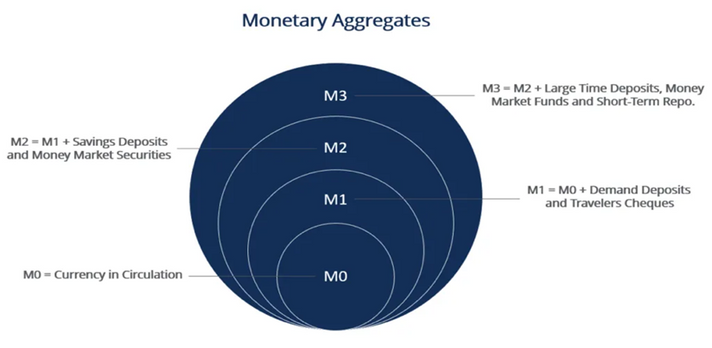
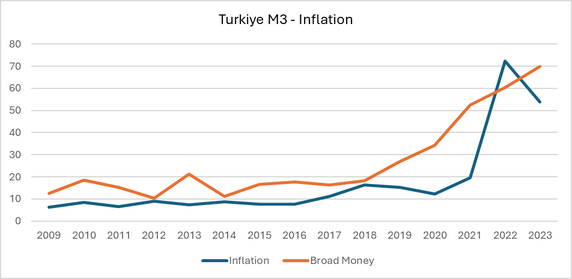
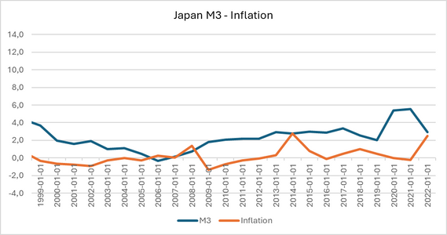

Inflation was in the past, and it will be in the future. It is one of the most crucial problems for economies throughout the world. Some economies, like Japan, strive to reach an inflation target to stimulate growth, while others, like Türkiye, aim to reduce inflation to preserve prosperity. Inflation therefore means different things to different economies.
To analyze it more deeply, we need a frame for the detailed relationship between inflation and the monetary policy tools that central banks use to keep prices stable. Many tools are deployed against inflation, but a few stand out: interest rates, the money supply, interest corridors, and macroprudential instruments such as required reserve ratios. Their relative importance varies country by country — generally the policy rate is the first tool central banks reach for. Yet the failure to control inflation in some countries leads us to ask whether other monetary tools also have a role to play.
Is money supply exogenous or endogenous?
This question has different answers across the history of economic thought, and it is necessary to look at the differing approaches to the money supply. According to David Ricardo, the money supply is limited by gold reserves; he treats it as exogenous, meaning it can be controlled. In The General Theory (1936), J. M. Keynes argues that the money supply is shaped by central bank control, while in A Treatise on Money (1930) he states that it depends on the demand for money by economic actors — especially firms' finance motive. So for Keynes the money supply is exogenous in one work and endogenous in the other. Schumpeter, meanwhile, argues that money plays a considerable role in building strong economic development, and he highlights the role of banks in providing credit (Festré and Nasica, 2009).
Inflation is always and everywhere a monetary phenomenon. — Milton Friedman
Friedman answered the question through the quantity theory of money, emphasising the crucial role of the money supply on inflation. According to Friedman (1956), there is a strong relationship between money growth and inflation, captured in the quantity equation:
M: quantity of money · V: velocity of circulation · P: price level · Y: real output
Modern empirical work confirms this classical link. There are four common measures of the money supply — M0, M1, M2 and M3. M3 is described as "broad money": although the US prefers M2 and the UK prefers M4, most countries, including Türkiye, report M3 to follow the effect of money on inflation.

Borio et al. (2023) find a strong link between money supply and inflation in recent years. To evaluate this relationship, it helps to compare two very different cases: Türkiye, with volatile inflation over the last 14 years, and Japan, which has struggled with growth between 1981 and 2022.
Two cases: Türkiye and Japan
Since the global financial crisis of 2007–2008, changes in the money supply and inflation have followed a similar trend in Türkiye. After the COVID-19 pandemic, in 2021, broad money showed its effect on inflation with a roughly one-year lag. That is why it matters to consider the effect of money supply on inflation in Türkiye — a developing economy — over the 2009–2023 period. Japan is the mirror image: its M3 trend sits around 2% and its inflation around 0% between 1999 and 2022, consistent with the country's long-running growth problem.


Macroprudential policies such as the required reserve ratio or loan-to-income (LTI) limits play a complementary role alongside money-supply tools, strengthening financial stability and shielding the system from shocks. Başçı (2023) argues that the macroprudential dimension of monetary policy — and its connection to the money supply — should not be ignored in any account of inflation.
Why stable inflation matters for growth
Inflation remains a considerable challenge for economies. Some, like Japan, see inflation as medicine to escape "hypothermia" and reach the ideal temperature — the growth target. Others, like Türkiye, treat inflation as a fever to be brought down to an ideal level. As in medicine, different treatments support one another, and monetary policy tools play a similarly complementary role.
Crucially, controlling inflation is not only about price and financial stability; it also paves the way for innovation and entrepreneurship grounded in creative destruction and sustainable growth. Aghion et al. (2009) show that stable inflation creates a predictable environment that supports productivity and entrepreneurship, and Professor Ufuk Akçiğit emphasises how monetary policy and financial stability prepare the ground for creative-destruction-based growth. Holding inflation steady provides predictability, preserves prosperity, and creates a suitable environment for firms over the long run.
Monetary policy tools vary — but interest rates, the money supply and macroprudential policy stand out. Whether money is ultimately endogenous or exogenous, it is clear that the money supply remains a crucial lever for controlling inflation. Borio et al. (2023) even identify two inflation regimes, high and low, raising the question of whether a money-growth threshold exists for G20 countries; Yılmazkuday (2012) likewise points to inflation thresholds for growth.
Selected references
- Borio, C., Hofmann, B., & Zakrajšek, E. (2023). Does money growth help explain the recent inflation surge? BIS Bulletin No. 67.
- Friedman, M. (1956). The Quantity Theory of Money: A Restatement. In Studies in the Quantity Theory of Money. University of Chicago Press.
- Aghion, P., Bacchetta, P., Rancière, R., & Rogoff, K. (2009). Exchange rate volatility and productivity growth. Journal of Monetary Economics, 56(4).
- Başçı, E. (2023). Macroprudential policy and inflation. Reference Module in Social Sciences, Elsevier.